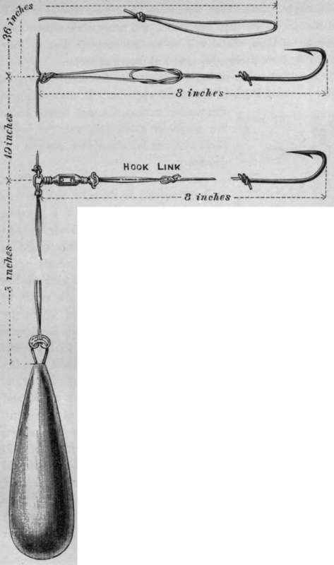
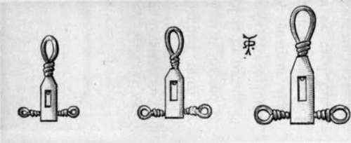

Sea Fishing From Small Boats. Part 5
Description
This section is from the book "Sea Fishing", by John Bickerdyke. Also available from Amazon: Sea Fishing.
Sea Fishing From Small Boats. Part 5
The reel should be well but not over filled, and should hold not fewer than seventy-five fathoms, or, in landsmen's language, one hundred and fifty yards. Under special circumstances even more line than this is required, especially in a strong tideway where the line is carried out some distance from the boat.
The actual bulk of the line must depend in a measure on the size of the fish, the weight of the leads, the depth of the water, and so on ; but what is most generally serviceable is one just a little larger than the Trent anglers use for pike when they cast off the reel. I have often had my line derided by ancient mariners who saw it for the first time ; but when they came to try its strength, and made their hands bleed in vain attempts to break it, they admitted that it was far superior to anything with which they were acquainted.
Without much question the best tackle for catching fish on or near the bottom is the paternoster and its various modifications. With the old-fashioned hand line and Kentish or other rig, one dangled about in the water, over and in full sight of the fish, a lump of lead and a cross-bar of metal wire, at the ends of which were attached two pieces of hemp snooding and some rough tinned hooks. With the paternoster the lead lies on the bottom, and the fish see nothing but the gut tackle above it.
In the illustration I have shown the most simple and most generally useful form of paternoster. To it is attached the ordinary pear-shaped lead which may be bought in most tackle shops. How the simple loops are made to which the hook lengths are attached is shown in the illustration opposite. It is a thing anybody can tie up in five minutes out of a couple of yards of gut. Swivels are not always necessary.
If there is not much current, and nothing larger than whiting and flat fish are expected, we can fish with light leads and a paternoster made up of lake-trout gut. If there are large codling about or other fish of considerable size, then the paternoster should be of salmon gut, or twisted gut, which is a good deal used. If of twisted gut, the loops to which the hooks are attached must be whipped on to the main length instead of being simply formed out of it by means of a knot, but it is infinitely better to introduce small swivels in the manner illustrated. Any brass or German silver swivel, if about the right size, can be used, but it is very desirable before making up the tackle to flatten or render oval the wire loop to which the upright portions of the tackle are made fast. I have shown how ordinary swivels may be used, but while at work on this book I devised a special swivel which not only allows for the twist of the hook link, but also revolves round the upright part of the tackle, which movement is less important. In the illustration overleaf are three sizes of these swivels, and they should answer all ordinary purposes. They were made by Messrs. Warner & Sons, of Redditch. Perhaps experience will prove that some modification of their shape will be an advantage. But as they stand they are thoroughly practical pieces of tackle.
A Simple Paternoster With Pear-Shaped Lead And Showing How A Swivel May Be Introduced.
A swivel boom of brass wire, much favoured by anglers who frequent Deal, is illustrated opposite. It does not give the double motion, the wire bends under the weight of a big fish, and the boom itself, so far as my experience goes, is unnecessary.
Another word as to swivels. These are most needed on the hook link, for very often the bait, particularly if a piece of pilchard or other fish, will slowly twist in the current. A small fish when hauled up out of the deep water frequently spins round and round, and would kink up the hook link unless there were a swivel to prevent it. In shallow water where the current is slight neither swivels nor booms are required, unless it be, indeed, a swivel (to remove kinks from a twisted line) between the running line and the top of the paternoster; but in deepish water, and wherever there is much stream or current, I would always advise the use of the swivel to prevent the hook links being twisted. It should hardly be necessary for me to say that steel swivels should never be used in salt water, brass being infinitely preferable, though not so strong as phosphor bronze. Bright brass swivels should be dulled by being placed for a few minutes in a solution of hyposulphite of soda, or by means of sulphur fumes.
A New Paternoster Swivel.
A still stronger form of paternoster can easily be made for use in very deep water where the fish are large and heavy leads are required. The upright portion may be made of strong hemp line served with wire at intervals where flat booms, made of horn and bored at one end to take the line, revolve. To the end of each boom (these measure four or five inches) should be six inches of tarred snooding, twisted up hard. Then comes a swivel, and beyond that from one to two feet of either gimp, twisted gut, or fine plaited line, according to the fish which are sought after. If conger or dogfish are abundant, the remarks on hooks and snooding for these fish given on p. 74 should be noted. This is useful tackle on a hand line in deep water, in which case one should have three little booms placed at intervals of six feet. For rod work, on the other hand, the topmost boom must not be further from the lead than the length of the rod.
The flattened cone lead, shown in the illustration, is rather a favourite of mine. I first saw it at Deal. It offers very little resistance to the water after being lowered, but does not sink so rapidly as the one next to be described.
Continue to:
- prev: Sea Fishing From Small Boats. Part 4
- Table of Contents
- next: Sea Fishing From Small Boats. Part 6
Tags
fishing, hooks, bait, fishermen, spanish mackerel, mackerel fishing